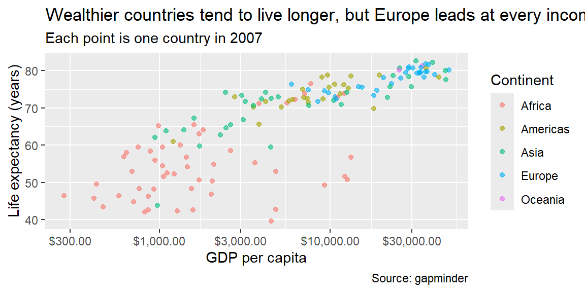
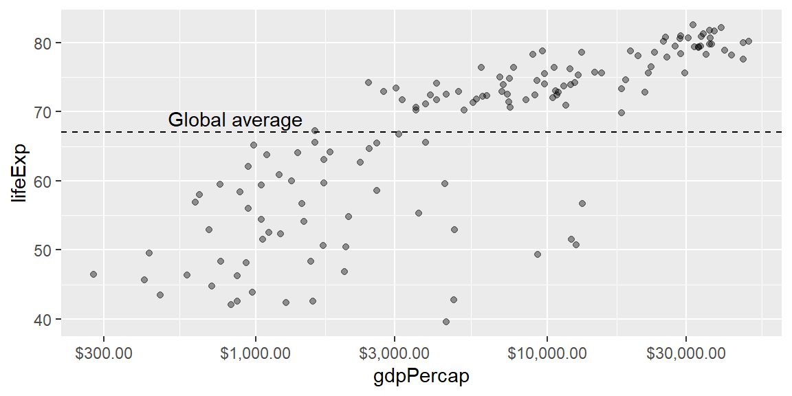
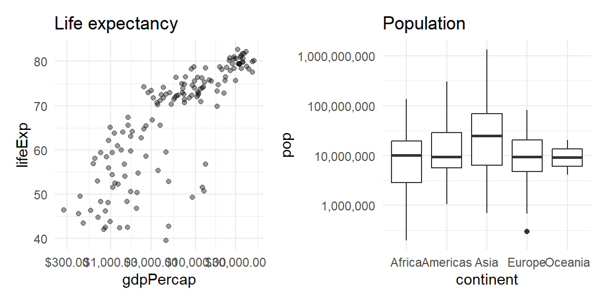
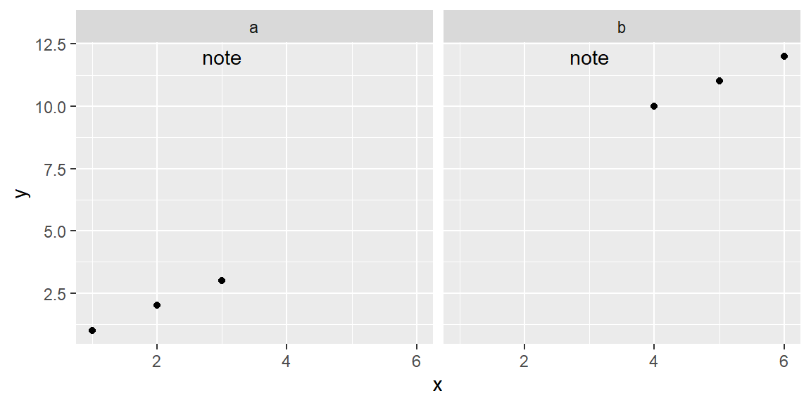
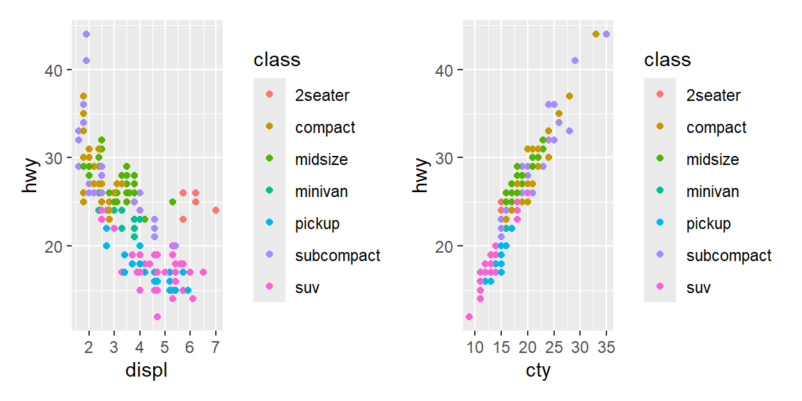
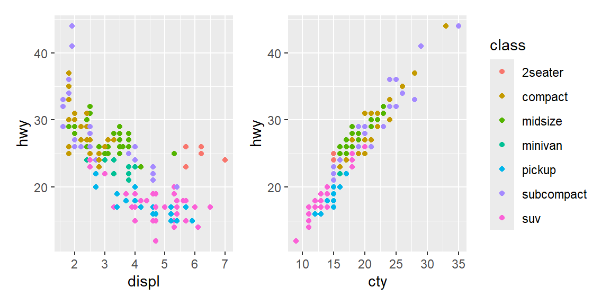

library(tidyverse)
library(gapminder)21 Session 21: Communication
Objectives
- Communicate your findings clearly. Turn exploratory graphics into expository graphics. Write titles that summarize the finding rather than describing the plot; add subtitles and captions; label axes and legends with units.
- Annotate a plot honestly. Use
annotate()andgeom_hline()/geom_vline()to call out a specific value directly on a plot, and know what happens when an annotation meetsfacet_wrap(). - Format scales for a real audience. Use
scales::label_dollar()andscales::label_percent()so axis breaks read the way a reader actually expects, and know the one setting that determines whetherlabel_percent()multiplies your numbers by 100 or not. - Zoom into a plot honestly. Distinguish
coord_cartesian(), which only changes what’s visible, from filtering the data (or setting a scale’slimits), which actually removes data before anything, including a fitted trend line, is computed. - Combine plots with
patchwork. Build a multi-panel figure with+/|//, and know why combined plots sometimes show a legend once and sometimes show it once per panel.
Notes
From exploratory to expository graphics
A reproducible analysis still needs to communicate clearly. labs() is the starting point: a title, subtitle, caption, and axis/legend labels.
lifeexp_2007 <- gapminder |> filter(year == 2007)
ggplot(lifeexp_2007, aes(gdpPercap, lifeExp, color = continent)) +
geom_point(alpha = 0.6) +
scale_x_log10(labels = scales::label_dollar()) +
labs(
title = "Wealthier countries tend to live longer, but Europe leads at every income level",
subtitle = "Each point is one country in 2007",
x = "GDP per capita",
y = "Life expectancy (years)",
color = "Continent",
caption = "Source: gapminder"
)
A title should summarize the finding (“Wealthier countries tend to live longer…”) rather than merely describe the plot (“A scatterplot of GDP vs. life expectancy”); the subtitle adds context, and the caption is a natural place for a data source. scales::label_dollar() formats axis breaks the way a reader actually expects to see money, rather than as raw numbers; scales::label_percent() does the same for proportions, though it has a fringe case worth knowing before you rely on it (see Example 21.2).
Annotating a plot
Beyond labels, annotate() and geom_hline()/geom_vline() call out a specific value or region directly on the plot:
ggplot(lifeexp_2007, aes(gdpPercap, lifeExp)) +
geom_point(alpha = 0.4) +
geom_hline(yintercept = mean(lifeexp_2007$lifeExp), linetype = "dashed") +
annotate("text", x = 500, y = mean(lifeexp_2007$lifeExp) + 2, label = "Global average", hjust = 0) +
scale_x_log10(labels = scales::label_dollar())
annotate() places its mark at a fixed, literal position in data space, which is exactly what you want on a single panel, and exactly what can surprise you the moment facet_wrap() enters the picture (see Example 21.3).
Themes and multi-panel figures
theme_minimal() (used throughout this book) is a reasonable default for reducing visual clutter; theme() adjusts specific elements (title position, legend placement) beyond what a built-in theme covers, and the patchwork package combines several separate ggplots into one figure with +/|//, handy for a multi-panel figure with one shared title.
library(patchwork)
p1 <- ggplot(lifeexp_2007, aes(gdpPercap, lifeExp)) +
geom_point(alpha = 0.4) +
scale_x_log10(labels = scales::label_dollar()) +
labs(title = "Life expectancy") +
theme_minimal()
p2 <- ggplot(lifeexp_2007, aes(continent, pop)) +
geom_boxplot() +
scale_y_log10(labels = scales::label_comma()) +
labs(title = "Population") +
theme_minimal()
p1 | p2
Combining plots that each carry their own color legend raises a question patchwork doesn’t answer for you automatically: does the combined figure need one legend or several (see Example 21.4)?
Zooming into a plot honestly
Zooming into part of a plot deserves special care: coord_cartesian(ylim = ...) changes only what’s visible, while filtering the data first (or setting a scale’s limits) actually removes data before anything, including a fitted trend line, is computed, which can silently change the numbers a plot is telling you about (see Example 21.1).
Fringe cases and common pitfalls
ExampleExample 21.1
Zooming with coord_cartesian() and zooming by filtering data are not the same operation, and a fitted line proves it.
set.seed(1)
df <- tibble(x = 1:100, y = x + rnorm(100, 0, 10)) |>
bind_rows(tibble(x = c(5, 10), y = c(200, 250))) # two extreme outliers
full_fit <- lm(y ~ x, data = df)
coef(full_fit)(Intercept) x
15.9015204 0.7871535 filtered_fit <- lm(y ~ x, data = df |> filter(y <= 120))
coef(filtered_fit)(Intercept) x
1.3166573 0.9954894 The slope and intercept are meaningfully different (roughly 0.79 versus 1.00) depending on whether the two outliers were included when the line was fit, even though both versions might be displayed zoomed into the exact same visible range. coord_cartesian(ylim = c(0, 120)) would zoom the plot’s viewport into that range while still fitting geom_smooth() on every point, outliers included; filtering the data down to y <= 120 first, or setting a scale’s limits (which drops out-of-range values the same way filtering does), actually removes the outliers before any statistic is computed. Visually, both can look like “the same zoomed-in plot”; only one of them is telling you the truth about a trend fit to the complete data.
ExampleExample 21.2
scales::label_percent() assumes its input is already a proportion between 0 and 1, and silently multiplies by 100 if it isn’t.
props <- c(0.42, 0.87, 0.15)
scales::label_percent()(props)[1] "42%" "87%" "15%"already_pct <- c(42, 87, 15)
scales::label_percent()(already_pct)[1] "4 200%" "8 700%" "1 500%"label_percent() multiplies whatever you give it by 100 and appends a % sign, which is exactly right for a proportion (0.42 becomes "42%") and exactly wrong for a value that’s already a percentage (42 becomes "4200%"), a mistake that’s easy to make if a column was computed as count / total * 100 upstream rather than left as a raw proportion. label_percent(scale = 1) fixes it by turning off that multiplication for values already on a 0-100 scale:
scales::label_percent(scale = 1)(already_pct)[1] "42%" "87%" "15%"Before formatting a column with label_percent(), check whether it already looks like a percentage or still looks like a proportion; the function has no way to tell the difference for you.
ExampleExample 21.3
annotate() places its label at a fixed position in every facet, not just the one you had in mind.
df_facet <- tibble(
x = c(1, 2, 3, 4, 5, 6),
y = c(1, 2, 3, 10, 11, 12),
g = rep(c("a", "b"), each = 3)
)
ggplot(df_facet, aes(x, y)) +
geom_point() +
facet_wrap(~g) +
annotate("text", x = 3, y = 12, label = "note")
The word “note” appears in both facet panels, identically positioned, even though annotate() was called only once. facet_wrap() works by repeating every layer once per panel, and annotate() is a single literal layer like any other, so it gets repeated too; it has no built-in concept of “only panel b.” To annotate a single facet, build a small data frame with one row per panel you actually want annotated (including a column matching the faceting variable) and pass it to geom_text() with data = instead of using annotate(), so the annotation layer only draws for the panel whose facet value matches.
ExampleExample 21.4
Combining plots with patchwork keeps every legend by default, even identical, redundant ones.
p1 <- ggplot(mpg, aes(displ, hwy, color = class)) +
geom_point()
p2 <- ggplot(mpg, aes(cty, hwy, color = class)) +
geom_point()
p1 + p2
Both panels map class to color with the exact same set of categories, so the combined figure shows the identical legend twice, once per panel, wasting space on a repeated explanation of the same colors. plot_layout(guides = "collect") tells patchwork to gather matching legends into a single shared one instead:
p1 + p2 + plot_layout(guides = "collect")
This only collapses legends that are actually identical (same aesthetic, same categories); two panels that color by genuinely different variables still each need, and each keep, their own legend.
Recap
| Term | Definition |
|---|---|
labs() |
Sets a plot’s title, subtitle, caption, and axis/legend labels; a title should state the finding, not describe the plot. |
annotate() |
Draws a single literal mark (text, a rectangle, a line) at a fixed position in data space; repeated once per panel under facet_wrap(). |
geom_hline() / geom_vline() |
Draws a horizontal or vertical reference line at a specified value. |
scales::label_dollar() |
Formats axis breaks as currency. |
scales::label_percent() |
Formats axis breaks as percentages; multiplies input by 100 unless scale = 1 is set for input already on a 0-100 scale. |
coord_cartesian() |
Zooms a plot’s visible range without discarding any underlying data, so fitted statistics (like geom_smooth()) stay computed on the full dataset. |
patchwork |
Combines separate ggplots into one figure with operators like + and /; plot_layout(guides = "collect") merges identical legends into one. |
Check your understanding
NoteProblems
- Why should a plot title state the finding rather than describe the plot, and what belongs in the caption instead?
- You zoom into a scatterplot with a fitted trend line by filtering out points above a threshold, rather than using
coord_cartesian(). Explain how this could change the reported trend, not just how much of the plot is visible. - A column of percentages was computed as
count / total * 100, so its values already range from 0 to 100. What happens if you format it with the defaultscales::label_percent(), and how do you fix it? - You call
annotate("text", ...)once on a plot that usesfacet_wrap()with four panels, intending the note to appear only in the first panel. What actually happens, and how would you annotate just that one panel instead? - Two ggplots, each colored by the same categorical variable with the same categories, are combined with
patchwork’s+. What shows up twice by default, and what one addition removes the duplication?
TipSolutions
A title that describes the plot (“A scatterplot of X vs. Y”) makes the reader do the work of finding the pattern themselves; a title that states the finding (“Wealthier countries tend to live longer”) tells them what to look for before they even study the axes. The caption is the natural place for supporting detail that isn’t the headline, most often the data source.
Filtering the data before fitting a trend line removes those points from the calculation entirely, not just from the visible plot area, so the fitted line reflects a different (smaller) dataset than the one being discussed.
coord_cartesian()only changes the visible viewport; every point, including ones now outside the visible range, is still included when the trend line itself is computed.label_percent()assumes its input is a proportion between 0 and 1 and multiplies by 100 before appending%, so a value like42(already a percentage) becomes"4200%"instead of"42%". Passingscale = 1tolabel_percent()turns off that multiplication for values already on a 0-100 scale.annotate()draws its literal mark once per facet panel, sincefacet_wrap()repeats every layer for every panel and has no way to know the annotation was meant for only one of them; the note appears identically in all four panels. To annotate only one panel, build a small data frame with one row per panel that should get the annotation, including a column that matches the faceting variable’s values, and pass it togeom_text(data = ...)instead ofannotate(), so the layer only draws for the matching panel.The color legend appears twice, once per panel, even though both legends show the exact same categories and colors. Adding
plot_layout(guides = "collect")merges matching legends into a single shared one for the whole combined figure.